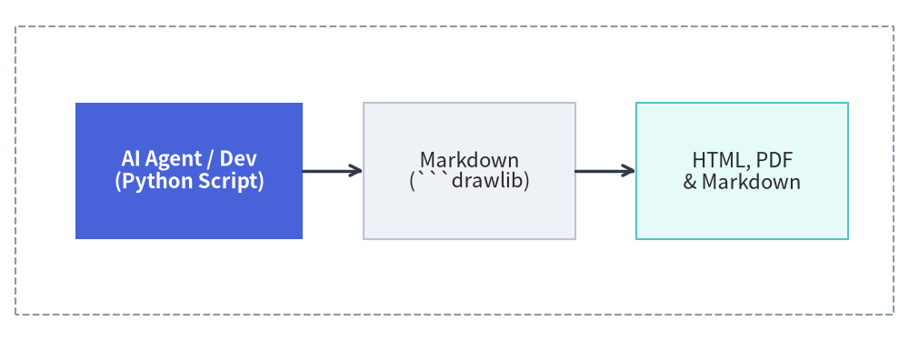
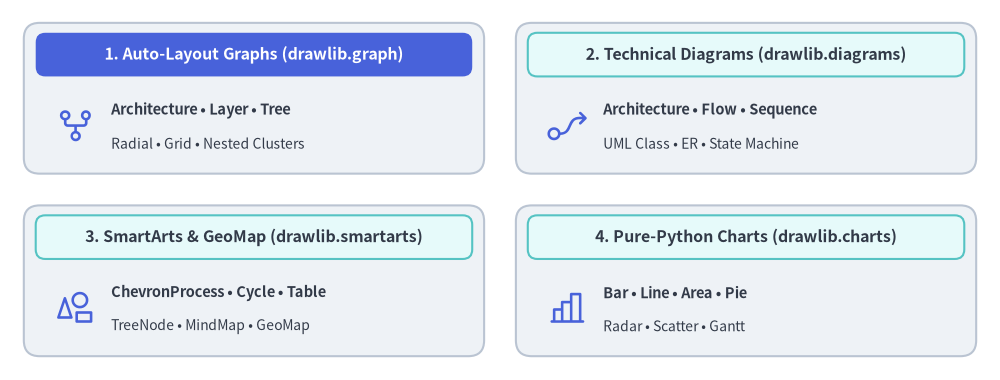

Drawlib Documentation
Drawlib is a pure-Python drawing library and documentation compiler crafted for "Illustration as Code" and "Illustrated Documentation as Code".
Designed from the ground up for modern software engineering and autonomous AI coding agents, Drawlib eliminates manual GUI drawing tools and brittle image files. Developers and LLM agents can create, version-control, and publish publication-grade architectural diagrams, flowcharts, data charts, and complete multi-page documentation sites entirely from declarative Python code.
Note — Built Autonomously with Drawlib & Gemini: Every page of prose and every illustration in this documentation was authored directly inside this Git repository using Drawlib and the Gemini Coding Agent (running in the Antigravity IDE). Human involvement was limited to high-level prompts—all document structure, technical explanations, and diagram designs were planned, coded, and visually verified autonomously by Gemini.

Source Code
from drawlib.canvas import save, setup
from drawlib.icons import phosphor
from drawlib.lines import line
from drawlib.shapes import rectangle
from drawlib.styles import Styles
from drawlib.text import text
setup(width=124, height=44)
header_white = Styles.WhiteBold.patch(text_size=12.0)
header_dark = Styles.DarkBold.patch(text_size=12.0)
title_ts = Styles.DarkBold.patch(text_size=11.0)
sub_ts = Styles.Dark.patch(text_size=10.0)
item_ts = Styles.DarkBold.patch(text_size=10.5, halign="left")
# 1. Author as Code (Hero Stage)
rectangle((20.5, 22.0), width=35.0, height=38.0, style=Styles.PrimaryOutline.patch(shape_r=2.0))
rectangle((20.5, 36.8), width=33.0, height=5.8, style=Styles.PrimaryFlat.patch(shape_r=1.2), text="1. Author as Code", text_style=header_white)
phosphor.code((20.5, 26.2), width=6.5, style=Styles.Primary)
text((20.5, 16.5), "Python & Markdown", style=title_ts)
text((20.5, 11.2), "```drawlib blocks & .py", style=sub_ts)
text((20.5, 6.5), "Git-tracked Single SoT", style=sub_ts)
# 2. Drawlib Compiler Engine
rectangle((61.0, 22.0), width=32.0, height=38.0, style=Styles.Neutral.patch(shape_r=2.0))
rectangle((61.0, 36.8), width=30.0, height=5.8, style=Styles.SecondaryNeutral.patch(shape_r=1.2), text="2. Drawlib Engine", text_style=header_dark)
phosphor.cpu((61.0, 26.2), width=6.5, style=Styles.Primary)
text((61.0, 16.5), "drawlib build", style=title_ts)
text((61.0, 11.2), "Headless Vector Render", style=sub_ts)
text((61.0, 6.5), "SQLite Incremental Cache", style=sub_ts)
# 3. Publication Outputs
rectangle((102.5, 22.0), width=37.0, height=38.0, style=Styles.Neutral.patch(shape_r=2.0))
rectangle((102.5, 36.8), width=35.0, height=5.8, style=Styles.SecondaryNeutral.patch(shape_r=1.2), text="3. Publications", text_style=header_dark)
phosphor.globe((89.5, 28.5), width=4.5, style=Styles.Primary)
text((93.2, 28.5), "HTML Web Site", style=item_ts)
phosphor.file_pdf((89.5, 21.5), width=4.5, style=Styles.Primary)
text((93.2, 21.5), "Vector PDF Book", style=item_ts)
phosphor.presentation_chart((89.5, 14.5), width=4.5, style=Styles.Primary)
text((93.2, 14.5), "16:9 Slide Deck", style=item_ts)
phosphor.file_md((89.5, 7.5), width=4.5, style=Styles.Primary)
text((93.2, 7.5), "GitHub Markdown", style=item_ts)
# Connectors
line((38.5, 22.0), (44.5, 22.0), arrow_head="->", style=Styles.DarkBold)
line((77.5, 22.0), (83.5, 22.0), arrow_head="->", style=Styles.DarkBold)
save()
Core Pillars
1. AI-Driven Documentation Pipeline
Drawlib is built to empower AI coding agents (such as Claude Code, Cursor, Gemini) to author and maintain technical documentation autonomously.
- Rules & Context Injection: Query targeted syntax rules on demand via
drawlib rules show <topic>. - Multimodal Visual Verification Loop: Agents export drawings with coordinate grids (
-g), visually verify label boundaries and line routing, and self-correct layout issues automatically.
2. Rich High-Level Visualizations
Avoid assembling hundreds of primitive shapes by hand. Drawlib provides production-ready, declarative components:
- Auto-Layout Graphs (
drawlib.graph): Declarative graph layout solvers (ArchitectureGraph,LayerGraph,TreeGraph,RadialGraph,GridGraph) with nested clusters,offset()fine-tuning, and standalone code scaffolding (export_code()). - SmartArts: Process pipelines (
ChevronProcess), cyclical loops (Cycle), data tables (Table), and trees (Tree). - Data Charts: Pure-Python bar, line, area, pie, radar, scatter, and Gantt charts without external graphing dependencies.
- Technical Diagrams: Cloud architectures (
ArchitectureDiagram), flowcharts (FlowDiagram), API sequences (SequenceDiagram), UML class diagrams (ClassDiagram), ER diagrams (ERDiagram), and state machines (StateDiagram).

Source Code
from drawlib.canvas import save, setup
from drawlib.icons import phosphor
from drawlib.shapes import rectangle
from drawlib.styles import Styles
from drawlib.text import text
setup(width=126, height=48)
hdr_white = Styles.WhiteBold.patch(text_size=11.5)
hdr_dark = Styles.DarkBold.patch(text_size=11.5)
body_bold = Styles.DarkBold.patch(text_size=10.5, halign="left")
body_sub = Styles.Dark.patch(text_size=10.0, halign="left")
# 1. Top-Left: Auto-Layout Graphs (Hero primary header)
rectangle((32.0, 35.5), width=58.0, height=19.0, style=Styles.Neutral.patch(shape_r=2.0))
rectangle((32.0, 41.0), width=55.0, height=5.5, style=Styles.PrimaryFlat.patch(shape_r=1.2), text="1. Auto-Layout Graphs (drawlib.graph)", text_style=hdr_white)
phosphor.git_fork((9.5, 32.0), width=5.2, style=Styles.Primary)
text((14.0, 34.0), "Architecture • Layer • Tree", style=body_bold)
text((14.0, 29.8), "Radial • Grid • Nested Clusters", style=body_sub)
# 2. Top-Right: Technical Diagrams
rectangle((94.0, 35.5), width=58.0, height=19.0, style=Styles.Neutral.patch(shape_r=2.0))
rectangle((94.0, 41.0), width=55.0, height=5.5, style=Styles.SecondaryNeutral.patch(shape_r=1.2), text="2. Technical Diagrams (drawlib.diagrams)", text_style=hdr_dark)
phosphor.flow_arrow((71.5, 32.0), width=5.2, style=Styles.Primary)
text((76.0, 34.0), "Architecture • Flow • Sequence", style=body_bold)
text((76.0, 29.8), "UML Class • ER • State Machine", style=body_sub)
# 3. Bottom-Left: SmartArts & GeoMap
rectangle((32.0, 12.5), width=58.0, height=19.0, style=Styles.Neutral.patch(shape_r=2.0))
rectangle((32.0, 18.0), width=55.0, height=5.5, style=Styles.SecondaryNeutral.patch(shape_r=1.2), text="3. SmartArts & GeoMap (drawlib.smartarts)", text_style=hdr_dark)
phosphor.shapes((9.5, 9.0), width=5.2, style=Styles.Primary)
text((14.0, 11.0), "ChevronProcess • Cycle • Table", style=body_bold)
text((14.0, 6.8), "TreeNode • MindMap • GeoMap", style=body_sub)
# 4. Bottom-Right: Pure-Python Charts
rectangle((94.0, 12.5), width=58.0, height=19.0, style=Styles.Neutral.patch(shape_r=2.0))
rectangle((94.0, 18.0), width=55.0, height=5.5, style=Styles.SecondaryNeutral.patch(shape_r=1.2), text="4. Pure-Python Charts (drawlib.charts)", text_style=hdr_dark)
phosphor.chart_bar((71.5, 9.0), width=5.2, style=Styles.Primary)
text((76.0, 11.0), "Bar • Line • Area • Pie", style=body_bold)
text((76.0, 6.8), "Radar • Scatter • Gantt", style=body_sub)
save()
3. Integrated Documentation Compiler
Write your technical spec or system architecture in standard Markdown with embedded drawlib blocks. A single command (drawlib build) compiles everything into:
- Responsive HTML Site (
docs_html/): Complete static site with sidebar navigation and instant search. - GitHub Markdown (
docs/): Clean Markdown with syntax-highlighted code and embedded relative images. - Headless PDF (
docs.pdf): Publication-ready vector PDF generated via Chromium.
Documentation Roadmap
Explore the comprehensive guides below:
- Getting Started
- Core philosophy, installation, quickstart, coordinate principles, project scaffolding, and AI agent configuration.
- Drawing Primitives & Styles
- Low-level vector shapes, polygons, domain primitives, block arrows, lines, typography, fonts, icons, image processing, preset themes, and color palettes.
- SmartArts
- High-level infographics: process pipelines, cyclical loops, data tables, hierarchical trees, mindmaps, grids, pyramids, lists, source code blocks, and geographic maps.
- Charts
- Declarative data plotting: axes & legends, bar, line, area, pie, radar, scatter, and project Gantt charts.
- Technical Diagrams
- Coordinate-controlled engineering diagrams: cloud architectures, flowcharts, sequence diagrams, UML class diagrams, ER diagrams, and state machines.
- Auto-Layout Graphs
- Declarative graph layout solvers (
ArchitectureGraph,LayerGraph,TreeGraph,RadialGraph,GridGraph), nested clusters,offset()fine-tuning, and code export.
- Declarative graph layout solvers (
- Animations (APNG & WebP)
- Multi-frame animations, smooth color transitions, progressive component reveals, arrow growth (
draw_ratio), and camera pan/zoom across all Drawlib modules.
- Multi-frame animations, smooth color transitions, progressive component reveals, arrow growth (
- Document Builder & CLI
- Illustrated Documentation as Code: Markdown block syntax, CLI reference, project templates (
doc,site,slide,images), 1920×1080 slide stage layout, customization, and two-tier caching & CI/CD.
- Illustrated Documentation as Code: Markdown block syntax, CLI reference, project templates (
- AI Agents & Advanced Integration
- Autonomous agent instructions, visual self-correction feedback loop, programmatic Python APIs, math utilities, and troubleshooting.